Russell's Research on the Alchemical Hands
This essay synthesizes evidence from James Russell's PhD thesis (Durham, 2014) and data extracted by this project's concordance pipeline. All claims about specific folios and images are grounded in retrieved dissertation references and matched image data. Where claims depend on provisional BL concordance data, this is marked explicitly.
Overview of the Dissertation Project #
Russell's thesis, submitted to Durham University in 2014, documented the marginalia in six copies of the 1499 Hypnerotomachia Poliphili, identifying 11 distinct annotator hands across these copies. His work demonstrated that the HP was actively read and annotated by humanists, playwrights, a pope, and alchemists over roughly two centuries (1499–1700). The thesis framed the annotated HP as a "humanistic activity book" in which readers cultivated ingegno through creative engagement with the text and its woodcuts.
Annotated Copies Relevant to the Alchemical Interpretation #
Two of the six copies studied by Russell contain alchemical annotations:
- British Library, C.60.o.12 (the "BL copy"): Contains two hands. Hand A is attributed to Ben Jonson. Hand B is an anonymous alchemist, possibly connected to the Royal Society circle, following the framework of Jean d'Espagnet.
- Buffalo Rare Book Room (the "Buffalo copy"): Contains five interleaved hands (A–E). Hand E is an anonymous alchemist following the pseudo-Geber (Jabir ibn Hayyan) school, emphasizing sulphur and Sol/Luna pairings.
The BL Alchemical Hand (Hand B) #
The BL alchemist (Hand B in C.60.o.12) is the more extensively documented of the two alchemical readers. Russell devotes Chapter 6 of his thesis to this hand, situating it within the broader tradition of seventeenth-century alchemical theory. The animating purpose of that theory was the recovery of prisca sapientia—an original wisdom, beginning with Hermes Trismegistus, that had been progressively obscured over the centuries. A text as complicated and linguistically obscure as the HP would have drawn much attention from an alchemist steeped in this tradition: the more recondite the text, the more ancient wisdom it was presumed to contain (Russell 2014, pp. 154–156).
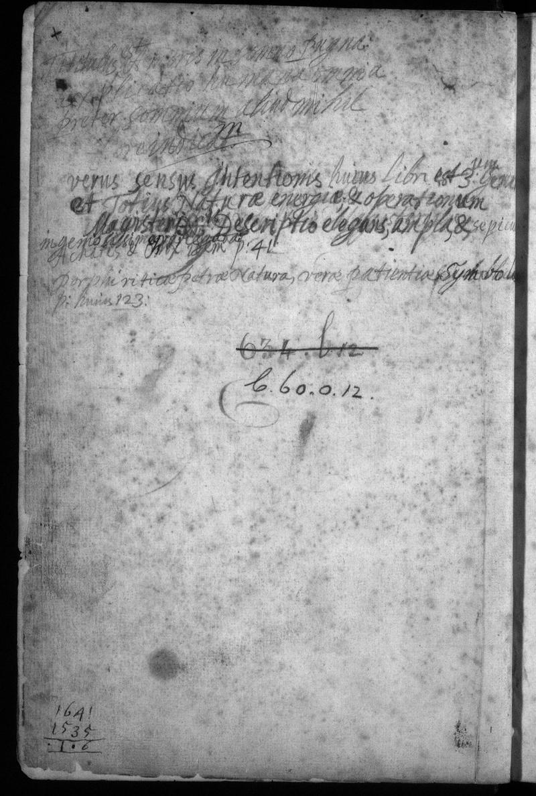
BL C.60.o.12, flyleaf verso (photo 003). Hand B's Master Mercury declaration. The shelfmark "C.60.o.12" and the date "1641" are visible below.
The Master Mercury Declaration
On the flyleaf verso, Hand B wrote a Latin summary declaring what the HP truly means:
"verus sensus intentionis huius libri est 3um: Geni et Totius Naturae energiae & operationum Magisteri Mercurii Descriptio elegans, ampla"
The true sense of the intention of this book is threefold: the full and elegant description of the energy and spirit of the whole nature, and of the operations of Master Mercury.
This declaration positions mercury (quicksilver) as the central principle. In the alchemical framework of Jean d'Espagnet (1564–1637), whose Enchiridion Physicae Restitutae was available in English from 1651, mercury is the vehicle of the spiritus mundi—the world spirit emanating from the sun. Mercury was understood to be the primal metal, always liquid at room temperature, while all other metals achieved liquidity only through heat. It was, as Russell puts it, "all things to all people" in the alchemical tradition (Russell 2014, pp. 159–161).
The annotator also twice praises the HP as "ingeniosissimo," recognizing it as exemplifying the ingegno—the improvisational intelligence—that early modern readers cultivated through annotation.
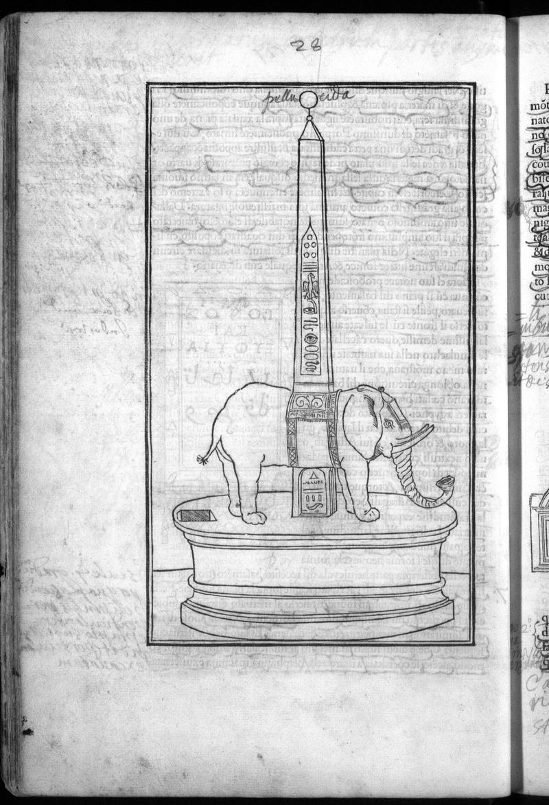
BL C.60.o.12, signature b6v (photo 041). The elephant and obelisk woodcut, densely annotated by Hand B with alchemical ideograms. This image later inspired Bernini's 1667 sculpture in Piazza della Minerva, Rome.
The Ideographic Vocabulary
Hand B used an extensive vocabulary of alchemical ideograms—compact symbols for gold, silver, mercury, Venus, Jupiter, and other elements—embedded within the syntax of Latin sentences. A particularly distinctive feature is the way B appended Latin case inflections to these symbols: "aurum" would be written as the gold symbol + "-um," and "Veneris" as the Venus symbol + "-eris." This creates a hybrid semiotic system where chemical signs function as Latin nouns within grammatical sentences (Russell 2014, pp. 149–152).
Russell notes that B's ideographic vocabulary shows striking consistency with Isaac Newton's manuscripts in the Keynes collection at Cambridge. Although the BL hand is certainly not Newton's, this consistency "may suggest that B was attached to the Royal Society, from the environs of Cambridge, or was otherwise connected to the figure of Newton" (Russell 2014, pp. 158–159). A careful comparison of B's annotations with Newton's remains, Russell notes, a productive avenue for future research.
Source: Russell 2014, Ch. 6, pp. 154–168. This project has 11 dissertation references attributed to Hand B, and has visually confirmed the Master Mercury declaration and ideographic annotations on BL photographs 003 (flyleaf) and 041 (b6v, elephant and obelisk).
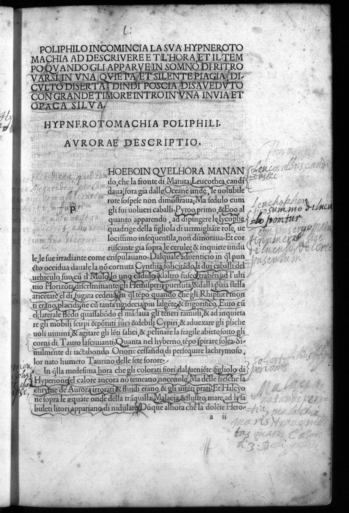
a1r (photo 014). The HP's opening page: "POLIPHILO INCOMINCIA." Marginal annotations from both Hand A (Jonson) and Hand B (alchemist).
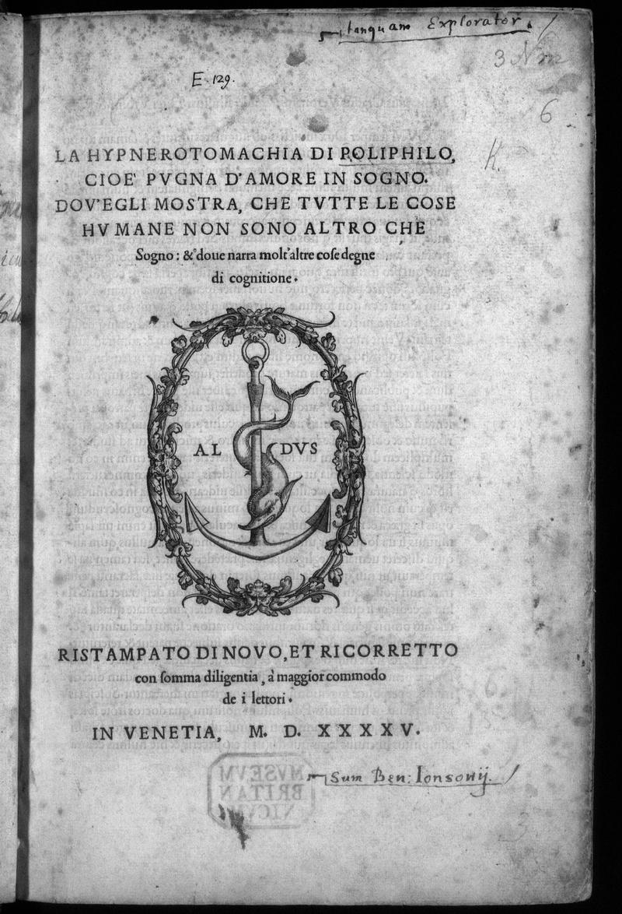
Title page (photo 004). "RISTAMPATO DI NOVO... M.D.XXXXV" (1545). Ben Jonson's ownership inscription "Sum Ben: Ionsonij" at bottom.
BL Alchemist: Referenced Folios
| Signature | Thesis Page | Marginal Text |
|---|---|---|
| a3r | 155 | none recorded |
| b6v | 156 | none recorded |
| b6v | 157 | none recorded |
| E8v | 157 | -ra |
| E8v | 157 | -ra |
| e1r | 163 | none recorded |
| d8v | 164 | Mother |
| d8v | 164 | vessel |
| a1r | 165 | AURORAE DESCRIPTIO |
| a1r | 166 | Tempus ergo matutinum erat, sine diluculo, uel crepusculum |
| a1r | 166 | Therefore it was the early morning, before dawn, or later in the evening, after sunset |
The Buffalo Alchemical Hand (Hand E) #
Hand E in the Buffalo copy is the latest of five interleaved hands, overwriting Hand D. Like the BL alchemist, Hand E labels passages and woodcuts with the element or stage of the alchemical process they were presumed to allegorize. But Hand E follows a fundamentally different alchemical school: the pseudo-Geber tradition (from Jabir ibn Hayyan), which emphasizes sulphur and the Sol/Luna (Sun/Moon) duality rather than mercury (Russell 2014, pp. 170–186).
In the Geberian framework, the masculine principle is represented by Sol (gold) and the feminine by Luna (silver). What makes Geber's thought distinctive is that these are understood as creative inverses: gold is masculine "in its height" and feminine "in its depth," while silver is feminine "in its height" and masculine "in its depth." It is the variance in these proportions that differentiates elements (Russell 2014, p. 187).
The Chess Match as Alchemical Distillation
Hand E's most remarkable annotation is a sustained alchemical reading of the human chess match at Queen Eleuterylida's palace (g8r–h1r). Thirty-two maidens play, one side dressed in silver and the other in gold. But the queens of both sides wear gold, and the kings of both wear silver—the inverse of the Geberian ideal, signaling that transmutation has yet to occur.
The annotator recorded the results of each of three rounds. Silver wins the first match; Hand E writes "Argentum" and draws a small crescent moon (Luna). Silver wins again in the second round. Gold finally triumphs in the third, and E initially writes "Rex ex auro factus victoriam ultimam"—then hesitates, corrects "Rex" to "[Re]gina," "auro" to "aura," "factus" to the solar symbol + "uestita," and "victor" to "victrix." E then cancels "Regina" and places "Auru(m)" as the culmination. The king of gold wins only after multiple rounds of play, each round representing a distillation (Russell 2014, pp. 188–189).
The outcome of this alchemical marriage is a hermaphrodite—the coincidentia oppositorum, the union of opposite qualities. Hand E found this principle encoded in the epigram D.AMBIG.D.D. ("dedicated to the ambiguous gods") on a statue base (b5r), which E reads as "diis ambiguis id est metallis hermafroditis"—"to the ambiguous gods, that is, to the metallic hermaphrodites" (Russell 2014, pp. 189–190).
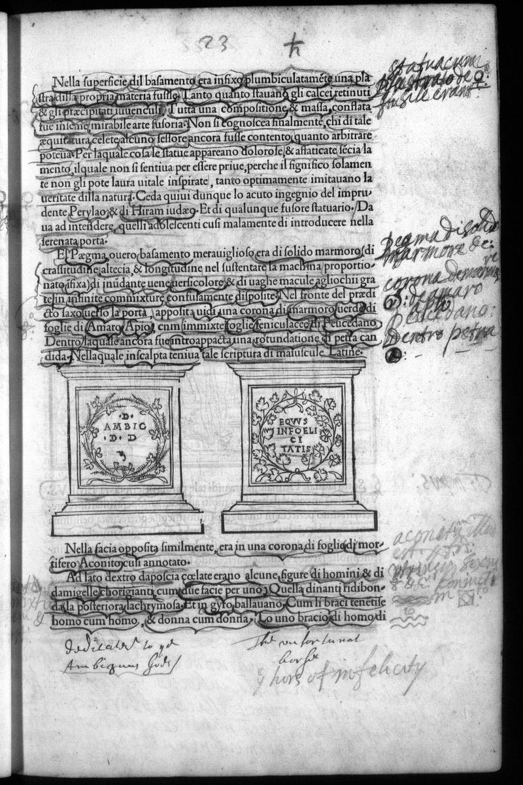
BL C.60.o.12, signature b4r (photo 036). The twin inscribed monuments bearing "D.AMBIG.D.D." — which Hand E in the Buffalo copy reads as "dedicated to the ambiguous gods, that is, to the metallic hermaphrodites." The BL copy shows this same passage heavily annotated by both hands.
Source: Russell 2014, Ch. 7, pp. 170–191. This project has 10 dissertation references attributed to Hand E. The Buffalo copy has no photographs; images above show the same folios in the BL copy.
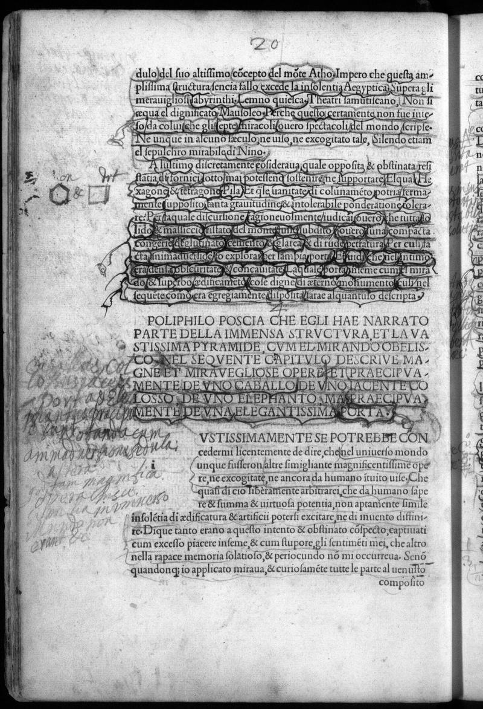
BL C.60.o.12, page 20 (photo 033). Alchemical ideograms visible in the left margin, showing Hand B's characteristic practice of embedding planetary symbols within Latin syntax. The pyramid passage is densely annotated.
Buffalo Alchemist: Referenced Folios
| Signature | Thesis Page | Marginal Text |
|---|---|---|
| a6r | 179 | Mercuriale Moly |
| a6r | 179 | Mercuriale Moly |
| b7r | 187 | Γόνος et Ευφυία |
| b7r | 187 | ingenium subtile |
| c6v | 187 | to the blessed Mother, the Goddess Venus, and to her Son, Amor, Bacchus and Demeter have given of their own substances |
| c6v | 188 | Bacchus et Ceres [Demeter] id est sol et luna |
| h1r | 189 | King |
| h1r | 189 | Auru(m) |
| h1r | 190 | dedicated to the ambiguous gods. |
| b5r | 190 | ambiguous gods |
Differences in Notation, Language, and Interpretive Logic #
| Feature | BL Hand B | Buffalo Hand E |
|---|---|---|
| Alchemical School | d'Espagnet (mercury-centered) | pseudo-Geber (sulphur / Sol-Luna) |
| Language | Latin with alchemical ideograms | Latin and Italian, fewer ideograms |
| Central Principle | Master Mercury as catalytic agent | Sol/Luna duality and chemical wedding |
| Key Passage | Flyleaf verso (Master Mercury declaration) | h1r (chess match as transmutation) |
| Notation Style | Extensive ideographic vocabulary | Minimal ideograms; more discursive |
| Approximate Date | Late 17th century (post-1623) | Unknown (latest of five hands) |
What Images We Currently Have #
This project has matched 33 images to alchemist-attributed dissertation references. The confidence distribution is:
- HIGH confidence: 33 matches
- MEDIUM confidence: 0 matches
- LOW confidence: 0 matches
What Is Secure vs. Provisional #
Secure:
- The existence and general character of two alchemical annotators (BL Hand B and Buffalo Hand E)
- The alchemical schools they followed (d'Espagnet vs. pseudo-Geber)
- The Master Mercury declaration on the BL flyleaf
- The folio signatures referenced by Russell in his thesis
- The signature map for the 1499 edition
Provisional:
- All BL photograph-to-folio matches (LOW confidence)
- The attribution of Hand B to the Royal Society circle
- The precise dating of Hand E relative to the other Buffalo hands
- Any specific image claimed to show a particular alchemical annotation
Why the Alchemical Readers Matter for HP Reception History #
The alchemical annotations demonstrate that the HP's readership extended well beyond antiquarian humanists and poets. The two alchemist annotators independently decoded the HP as concealing alchemical formulae beneath its love narrative—yet they arrived at fundamentally different readings because they operated within different alchemical traditions. This diversity illustrates Russell's broader argument that the HP functioned as a "humanistic activity book": a text whose deliberate obscurity invited readers to impose their own interpretive frameworks.
The alchemical tradition of reading the HP stretches back to Beroalde de Verville's 1600 French edition, which included a "tableau steganographique" listing alchemical equivalents for the narrative's symbols. The BL and Buffalo annotations show that this tradition persisted into the seventeenth century and took distinct forms depending on the alchemical school of the reader.
Woodcuts with Marginal Annotations #
Russell's dissertation identified 18 woodcut pages in the BL copy (C.60.o.12) that bear marginal annotations. Of these, 4 have specifically alchemical annotations by Hand B, and 8 have heavy annotation density. These pages represent the intersection of the HP's visual program with its readers' interpretive activity — the woodcuts that provoked the most active engagement from the annotating hands.
These woodcuts were extracted from Russell's corpus analysis. Each entry preserves the original scholarly description, annotation data, and dictionary cross-references. Click the folio link to view the full marginalia page with Phase 3 deep readings.
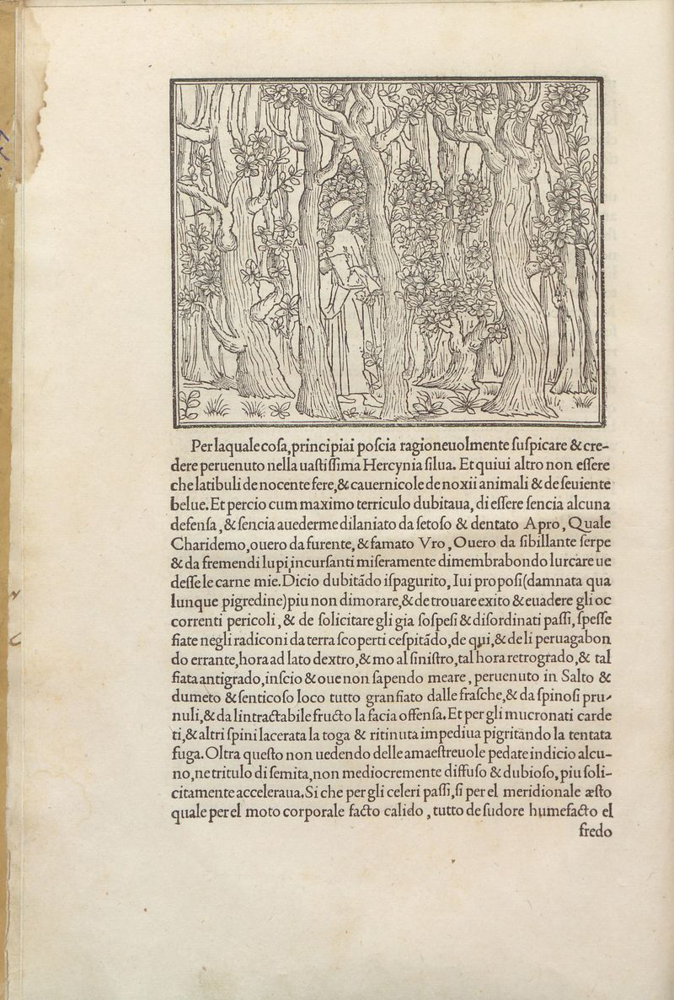
The Dark Forest (Selva Oscura)
A dense woodland scene showing tall trees with intertwining branches and thick foliage. The composition creates a sense of enclosure and disorientation. The woodcut introduces the HP's characteristic style: architectural precision applied to natural forms.
Priki (2016) reads the dark forest as a structural device common to dream narratives. The Dantean echo is noted by most scholars.
BL annotations present — View folio a2v
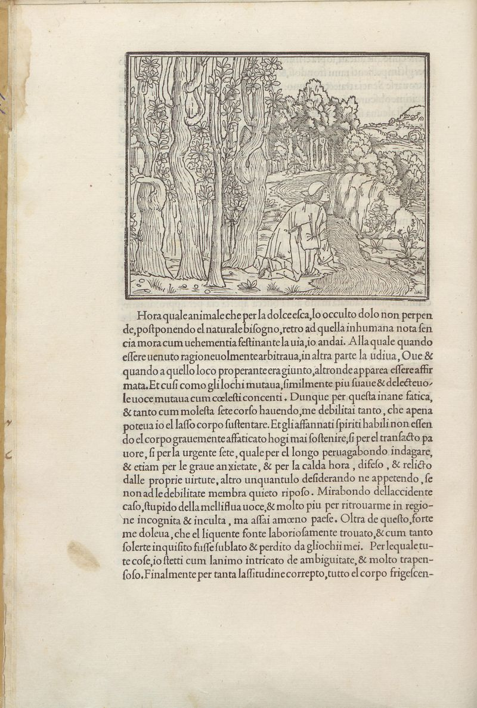
Poliphilo in the Landscape
A figure reclines or lies in an open landscape with trees and rocky terrain. The composition shifts from the claustrophobic forest to a more expansive view, signaling narrative progress.
BL annotations present — View folio a4v
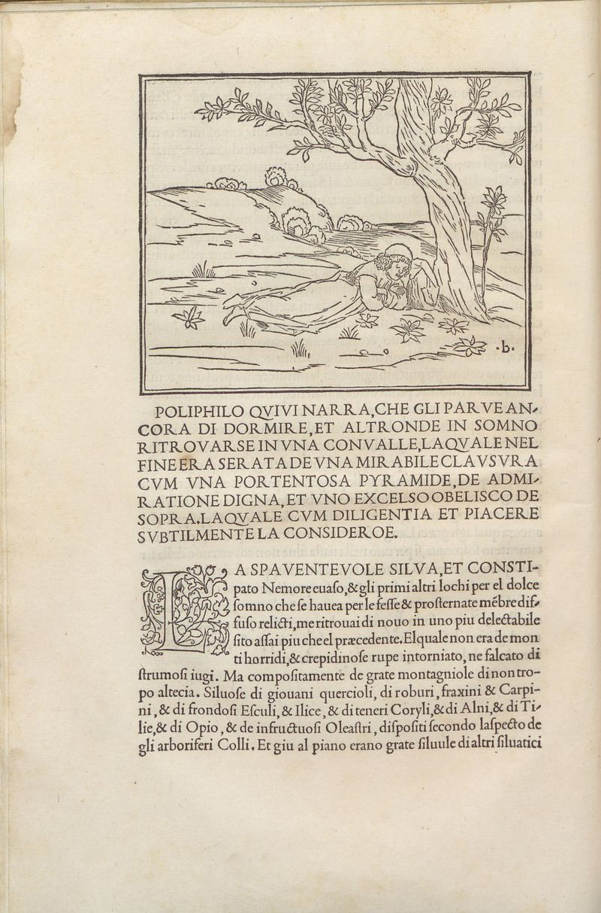
Poliphilo Sleeping (Dream within a Dream)
Poliphilo sleeps in a landscape setting, entering the dream-within-a-dream that contains the HP's principal narrative. The woodcut visually marks this crucial structural transition.
Priki (2016) reads the double dream as adapting the Roman de la Rose model. Gollnick (1999) provides theoretical framework for dream-narrative initiation.
BL annotations present — View folio a5v
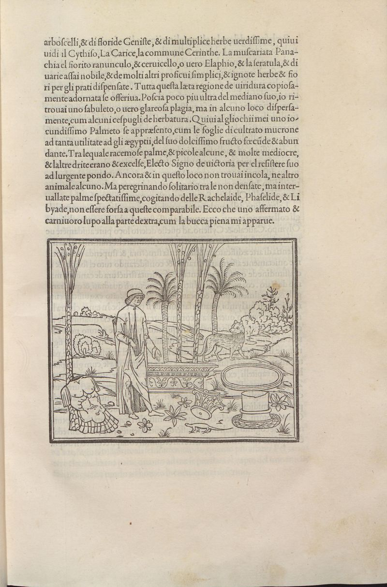
Poliphilo in a Garden with Palms
A figure stands in a garden with palm trees and a circular well or fountain structure. The garden setting introduces the botanical precision that characterizes the HP's landscape descriptions.
BL annotations present — View folio a6r
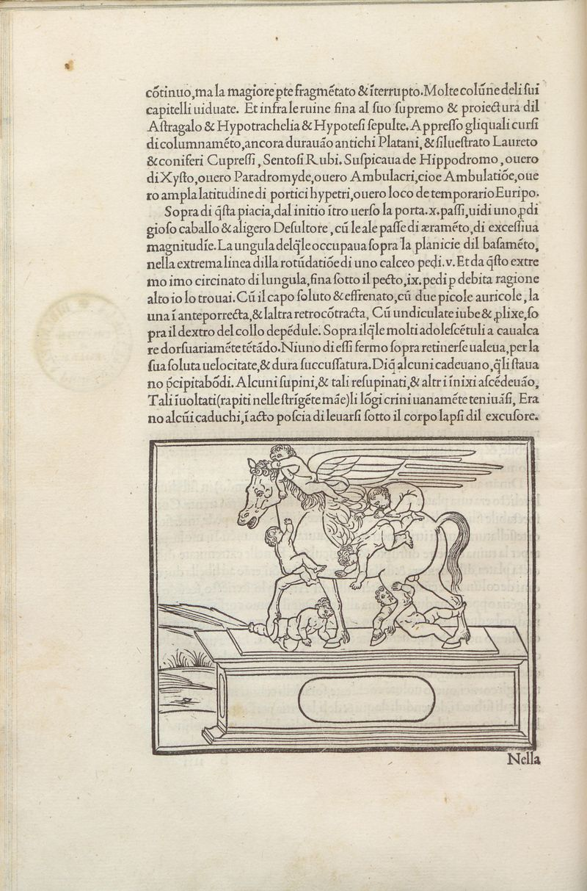
Horse and Rider on a Sarcophagus
A horse bearing a figure stands on a sarcophagus or raised pedestal. The composition reflects classical funerary relief sculpture, consistent with the HP's antiquarian program.
BL annotations present — View folio b3v
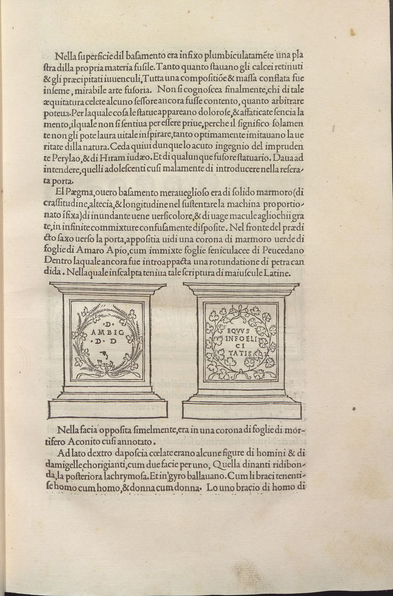
Twin Inscribed Monuments (D.AMBIG.D.D.)
Two paired rectangular monument bases, each bearing inscriptions within decorative wreaths or circular frames. The left monument is partially damaged. Both sit on classical pedestal bases.
Russell (2014, pp. 189-190) documents how Buffalo Hand E reads D.AMBIG.D.D. as encoding the alchemical hermaphrodite principle.
BL annotations present (alchemical) — View folio b4r
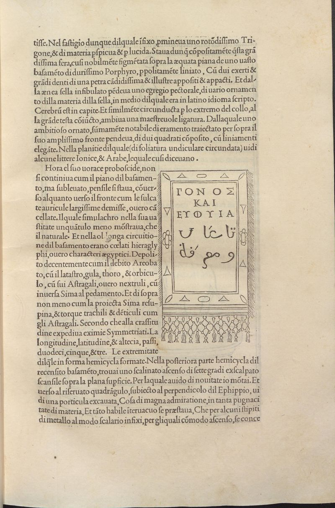
Inscription Monument (GONOS KAI ETOUSIA)
A rectangular inscribed monument with a Greek text reading GONOS KAI ETOUSIA within a decorative architectural frame. The monument exemplifies the HP's characteristic fusion of pseudo-classical epigraphy and visual design.
BL annotations present — View folio b6r
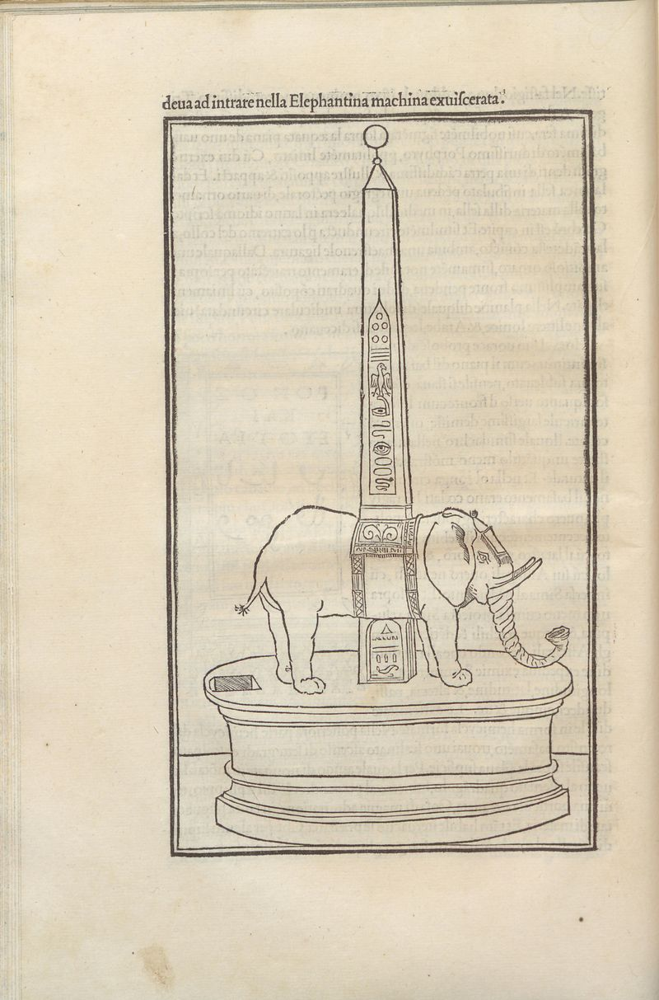
The Elephant and Obelisk
An elephant stands on a circular plinth bearing a tall obelisk decorated with pseudo-Egyptian hieroglyphic carvings and ornamental motifs. The obelisk is topped with a sphere. The composition combines Egyptian and classical elements in the HP's characteristic mode of syncretic antiquarianism. In the BL copy, Hand B (the alchemist) densely annotated this woodcut with alchemical ideograms, reading the elephant-obelisk as encoding alchemical processes.
Heckscher (1947) documented how Bernini drew on this woodcut for his 1667 Piazza della Minerva sculpture. Russell (2014, pp. 156-157) analyzes Hand B's alchemical ideograms on this page. Curran (1998)...
BL annotations present (alchemical) — View folio b6v
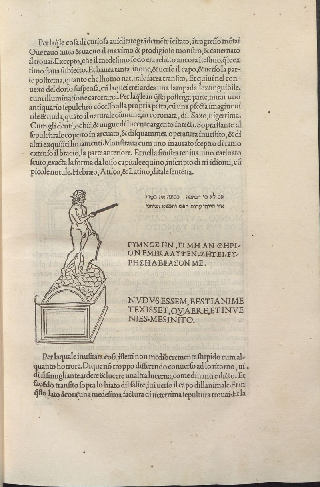
Figure on Monument with Greek Inscription
A figure stands on a monument or pedestal base bearing a Greek inscription. Below the main figure is a smaller inscription panel. The composition combines figurative sculpture with epigraphic elements.
BL annotations present — View folio b7r
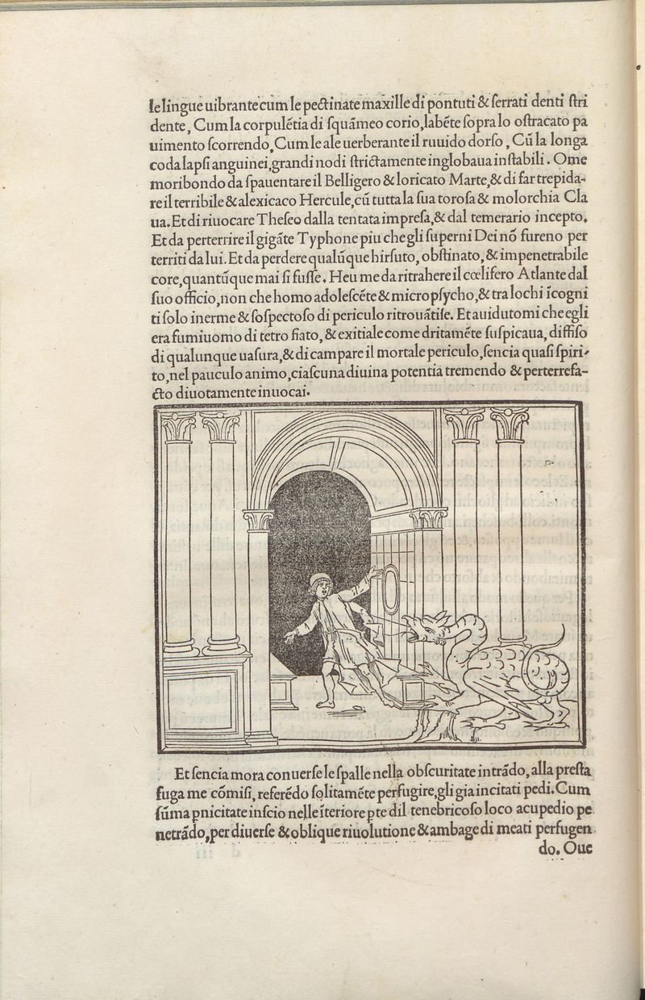
Poliphilo at a Portal with a Dragon
Poliphilo faces a dragon or beast at the entrance to an architectural structure with classical columns. The portal frames the encounter, making architecture itself a participant in the narrative drama.
BL annotations present — View folio d2v
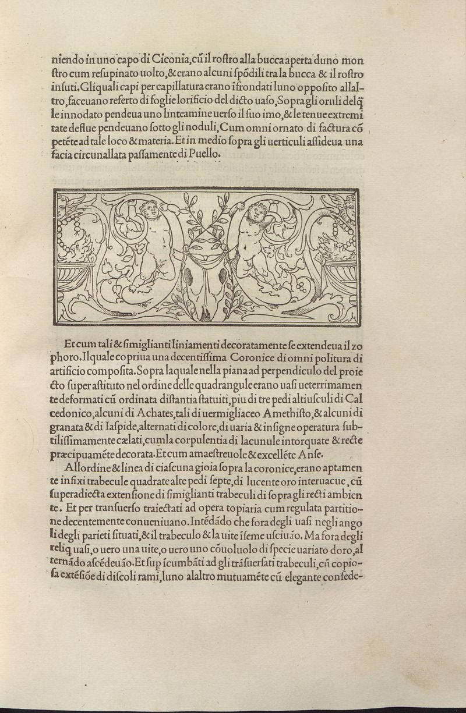
Grotesque Frieze with Hybrid Figures
A horizontal frieze band showing intertwined human and animal figures emerging from acanthus scrollwork. The grotesque style combines classical ornamental vocabulary with fantastical hybrid invention.
Dacos (1969) provides the standard account of grotesque ornament's Renaissance revival. The HP is among the earliest printed works to depict this style.
BL annotations present — View folio f4r
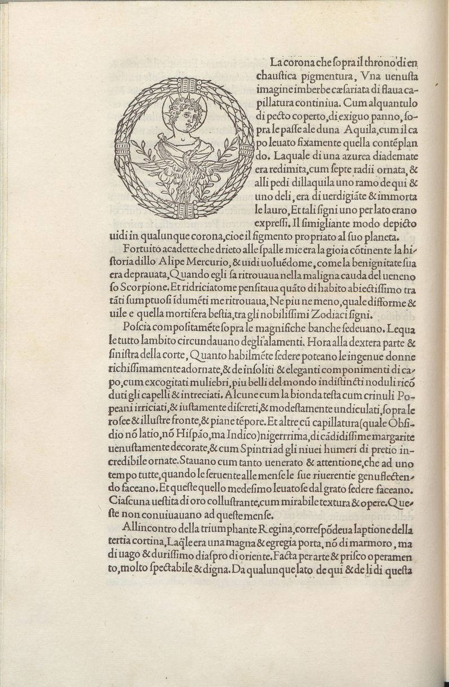
Circular Medallion with Deity Figure
A circular medallion containing a bust or deity figure, framed by ornamental borders. The circular format echoes classical coin and gem designs, consistent with the HP's antiquarian visual vocabulary.
BL annotations present (alchemical) — View folio f6v
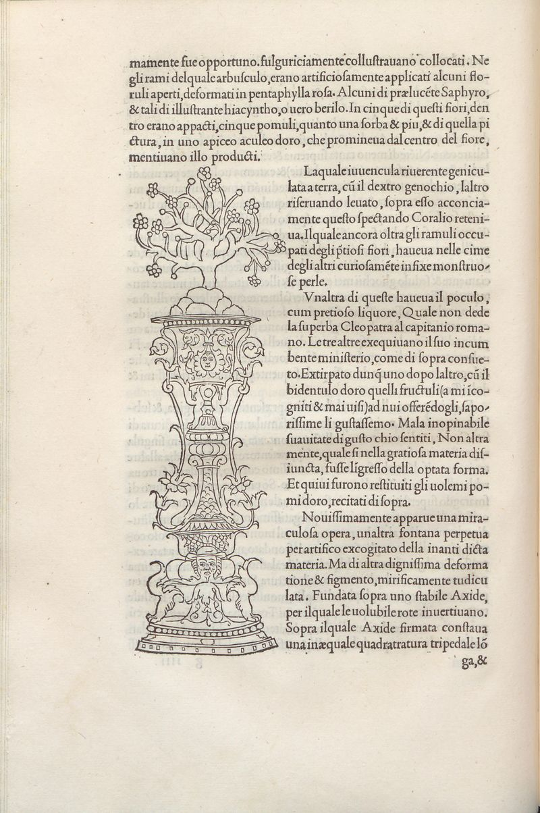
Ornate Candelabrum or Fountain Structure
A tall ornate structure resembling a candelabrum or fountain, with decorative tiers incorporating botanical elements (leaves, flowers) and architectural moldings. It sits on a broad base.
BL annotations present — View folio g3v
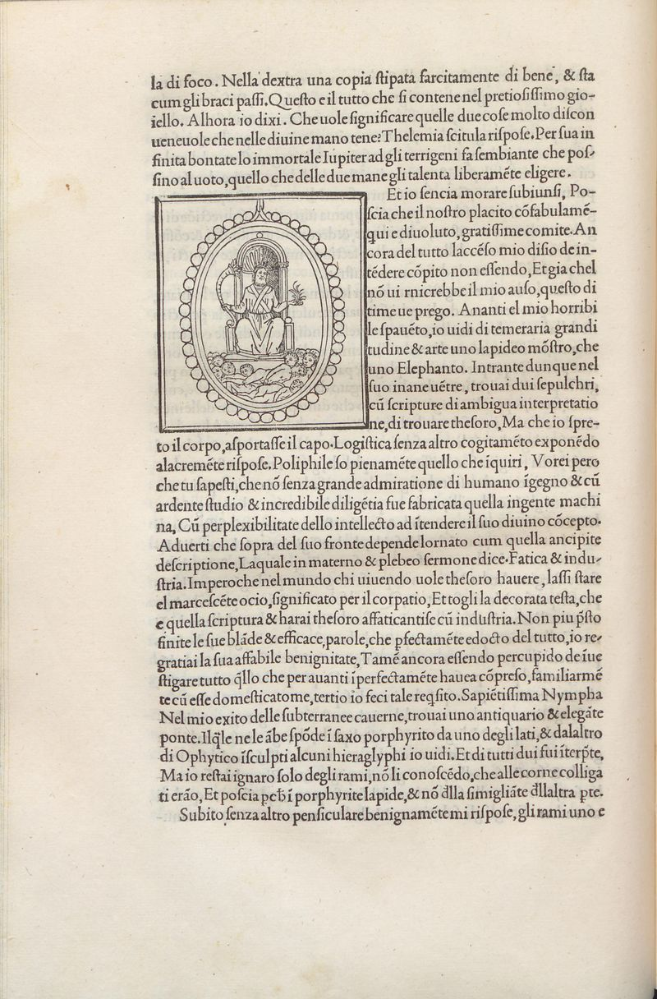
Circular Medallion or Cameo
A circular medallion containing a figure, set within the text flow. Annotations reference Jupiter, suggesting this image was read within the planetary-metal correspondence framework.
BL annotations present — View folio h5v
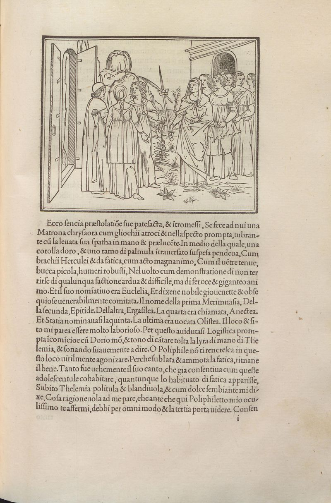
Figures at a Portal or Doorway
Multiple figures at an architectural portal or doorway, in a scene that may depict a greeting, a departure, or a ceremonial encounter. The composition uses the portal as a framing device.
BL annotations present (alchemical) — View folio h8r
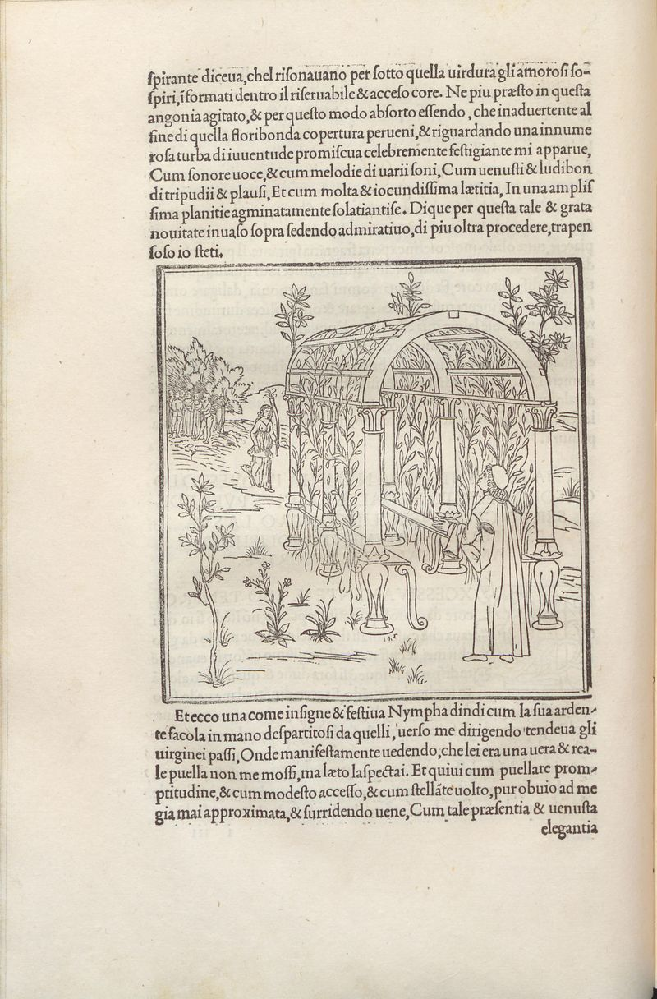
Garden Scene with Pergola and Nymph
An architectural gateway or pergola structure surrounded by vegetation, with figures approaching or present within the garden setting. The composition integrates built and natural forms in the HP's characteristic garden mode.
BL annotations present — View folio i2v
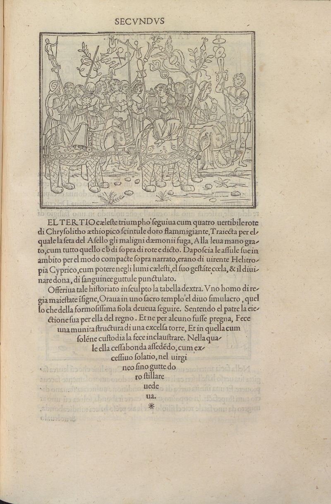
Triumphal Procession with Soldiers
A procession of soldiers and musicians bearing standards and flags, depicted in a dense figural composition. The procession moves across the page in the HP's characteristic frieze-like arrangement.
The triumph woodcuts connect the HP to Renaissance festival culture and the classical literary tradition of the triumphus.
BL annotations present — View folio k5r
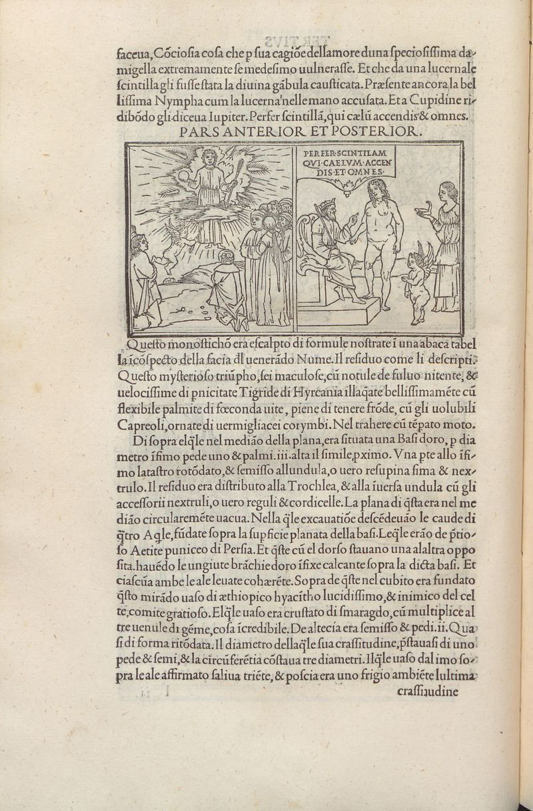
Triumph Scene (PARS ANTIQVA ET POSTERIOR)
A triumphal scene with a central elevated figure surrounded by attendants. An inscription above reads TEPEFA SCINTILLAM QVI CAELVM ACCENDIT ET ORBEM ('the spark that kindled heaven and earth'). The composition combines processional narrative with epigraphic elements.
BL annotations present — View folio k7v